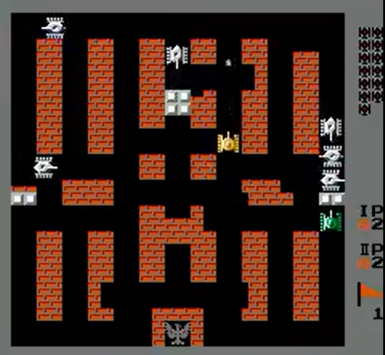

Multi-Agent Reinforcement Learning
Multi-agent Reinforcement Learning on simulated environment of BattleCity, an NES game.
OpenAI Gym provides wrappers for retro games for the purpose of AI tasks. This project is based on one such Nintendo Entertainment System game called BattleCity, a multiplayer 2D topdown shooter where the objective is to defend your base while defeating as many enemies as possible.
The game environment is generated using the OpenAI Gym Retro Game Integration Tool. This tool generates a state file containing the two player start state, a JSON data file describing the game variables like enemies left, lives left, player 1 score, player 2 score.
The problem statement is modeled as a Markov Decision Process consisting of states that the agent exists in, the actions it takes, transition rules and the reward it obtains. Agents in the environment interact with each other as well as the opponents and make real-time decisions with incomplete information resulting in more challenging learning policies.
The primary tasks are to map actions, design rewards and choose an active learning solution. Double Deep Q-Networks are used to implement active RL with a random agent as the baseline. Single-agent implementations are extended to multi-agent scenarios by using the appropriate state and data files as well as incorporating all the information into the CNN in the DQN architecture.
This implementation works with only two players with the trained agents strategically moving, avoiding enemy projectiles, attacking opponents successfully. Compared to the baseline, the multi-agent setup successfully identifies the base and protects it, gets high scores with low loss of lives, and learns how to collaborate with partners.
Tools and Libraries used: gym, retro, torch, pickle, Open AI Gym wrappers , Retro game integration, Retro API
Find code here: Github Repository-DQN-BattleCityNes